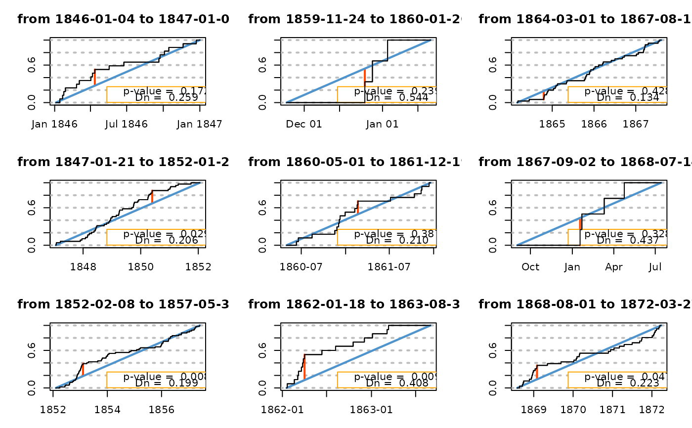
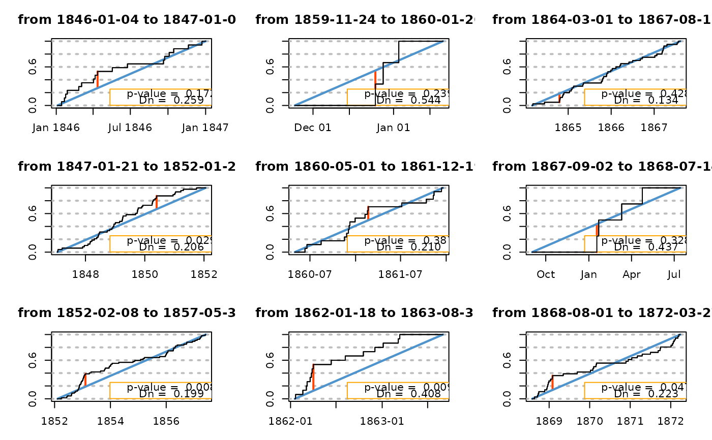

Goodness-of-fit for the distribution of dates
gof.date.RdGoodness-of-fit diagnostics for the distribution of event dates in a (assumed) Poisson process
Usage
gof.date(date,
start = NULL,
end = NULL,
plot = TRUE,
main = NULL,
skip = NULL,
plot.type = "skip")Arguments
- date
-
Object of class
POSIXct(or that can be coerced to this class) giving the dates to be tested. Must be in strictly increasing order. - start
-
The beginning of the interval, a
POSIXctobject. IfNULL, the first event indateis used. - end
-
Object of class
POSIXctthe end of the interval. IfNULL, the last event indateis used. - plot
-
Should a plot be shown?
- main
-
Character giving the main title of the plot. The default
NULLstands for a default main describing the period. - skip
-
Optional data.frame with columns
startandendindicating start and end of skipped periods. The two columns need to be coerced to POSIXct objects. They can be POSIXct or character with POSIX datetime format. - plot.type
-
Character indicating the type of plot to produce when a
skipdata.frame is given. Withplot.type = "skip"the plot shows missing periods as greyed rectangles and the displays the results of a Kolmogorov-Smirnov (KS) test performed on the events. For the"omit"case the missing periods are collapsed into vertical lines on the plot and the displayed results are for an "effective" KS test of uniformity performed omitting the missing periods.
Details
In the homogeneous Poisson process, events occur on a time interval in a uniform fashion. More precisely, for a given time interval the distribution of the event dates conditional to their number \(n\) is the distribution of the order statistics of a sample of size \(n\) of the uniform distribution on this interval.
When the interval has limits taken at events the uniformity statement
remains true, but for inner events. This behaviour is met when
start and end are not given and taken as the first and
last events in date.
Value
A list
- effKS.statistic, KS.statistic
-
Kolmogorov-Smirnov global test statistic for uniformity (bilateral test) omitting slipped periods or not.
- effKS.pvalue, KS.pavalue
-
Critical probability in the KS test omitting skipped periods or not.
- effnevt, nevt
-
Number of events omitting skipped periods or not.
- effduration, duration
-
Effective duration i.e. total duration of non-skipped periods. In years, omitting skipped periods or not.
- effrate, rate
-
Occurrence rate in number of events by year, omitting skipped periods or not.
- effduration, duation
-
Total duration in years, omitting missing periods or not.
- noskip
-
Data.frame object giving indications on the periods that are NOT skipped over (hence usually non-missing periods). These are :
start,end(POSIX),duration(in years)rate(in number of events by year) and Kolmogorov test statistic and p-value. This data.frame is only available when a suitableskiphas been given.
When the number of events corresponding to the indications of args is
0, the function returns NULL with a warning. When the
number of events is less than 6 a warning is shown.
Note
In practical contexts missing periods are often met in the datasets. The diagnostic should therefore be applied on every period with no missing data. Even if the event dates seem reasonably uniform, it is a good idea to check that the rates do not differ significantly over intervals.
When some events are missing and no suitable information is given via
the skip argument, the global rate, KS.statistic
and KS.pvalue are of little interest. Yet the graph might be
instructive.
Warning
When skipped periods exist the number of events, duration, rate the
global KS test must be computed by omitting the skipped periods in the
duration and retaining only valid interevents. The indication given in
nevt rate and duration should be used only when no
skipped period exist (skip = NULL on input) and replaced by
effnevt, effrate and effduration otherwise.
See also
interevt function for the determination of interevents
ans subsequent diagnostics.
Examples
## Use "Brest" dataset
## simple plot. Kolmogorov-Smirnov is not useful
gof1 <- gof.date(date = Brest$OTdata$date)
## consider missing periods. Much better!
gof2 <- gof.date(date = Brest$OTdata$date,
skip = Brest$OTmissing,
start = Brest$OTinfo$start,
end = Brest$OTinfo$end)
print(gof2$noskip)
#> start end duration nevt rate Dn KS
#> 1 1846-01-04 1847-01-01 0.99110198 17 17.152624 0.25869353 1.717288e-01
#> 2 1847-01-21 1852-01-21 4.99931554 48 9.601314 0.20577766 2.929104e-02
#> 3 1852-02-08 1857-05-31 5.30869268 67 12.620810 0.19930261 8.281010e-03
#> 4 1859-11-24 1860-01-20 0.15605749 3 19.223684 0.54385965 2.390263e-01
#> 5 1860-05-01 1861-12-19 1.63449692 17 10.400754 0.21006996 3.869240e-01
#> 6 1862-01-18 1863-08-31 1.61533196 15 9.286017 0.40790960 9.055002e-03
#> 7 1864-03-01 1867-08-11 3.44421629 40 11.613672 0.13441971 4.276681e-01
#> 8 1867-09-02 1868-07-14 0.86516085 4 4.623418 0.43670886 3.280955e-01
#> 9 1868-08-01 1872-03-27 3.65229295 36 9.856822 0.22318008 4.680336e-02
#> 10 1872-04-01 1872-04-14 0.03559206 0 0.000000 NA NA
#> 11 1872-04-20 1874-04-30 2.02600958 23 11.352365 0.31345476 1.658943e-02
#> 12 1874-05-12 1877-08-31 3.30458590 34 10.288732 0.31068766 2.056766e-03
#> 13 1877-10-02 1878-08-31 0.91170431 14 15.355856 0.24882025 2.991187e-01
#> 14 1878-10-03 1891-11-02 13.08145106 118 9.020406 0.21491511 3.689848e-05
#> 15 1891-11-30 1897-05-31 5.50034223 29 5.272399 0.18726077 2.303942e-01
#> 16 1897-08-02 1907-05-31 9.82340862 51 5.191681 0.17492950 7.782022e-02
#> 17 1907-07-01 1910-04-19 2.80082136 10 3.570381 0.26705767 4.022871e-01
#> 18 1910-05-03 1911-03-22 0.88432580 7 7.915635 0.56965944 1.126370e-02
#> 19 1911-03-29 1915-01-01 3.76180698 55 14.620633 0.13247320 2.650737e-01
#> 20 1915-01-02 1916-12-31 1.99589322 27 13.527778 0.16735254 3.925299e-01
#> 21 1917-02-02 1920-09-15 3.61670089 16 4.423921 0.16639856 7.073911e-01
#> 22 1920-09-19 1922-08-31 1.94661191 9 4.623418 0.25316456 5.312227e-01
#> 23 1922-10-02 1922-12-09 0.18617385 0 0.000000 NA NA
#> 24 1922-12-16 1923-07-17 0.58316222 6 10.288732 0.49530516 6.990292e-02
#> 25 1923-07-27 1937-08-01 14.01505818 123 8.776275 0.12200363 5.137767e-02
#> 26 1937-08-02 1937-11-01 0.24914442 2 8.027473 0.50549451 4.890714e-01
#> 27 1939-01-01 1940-06-23 1.47570157 9 6.098794 0.38486910 1.040578e-01
#> 28 1940-07-02 1944-04-30 3.82751540 35 9.144313 0.12511751 5.996061e-01
#> 29 1952-09-30 1952-11-05 0.09856263 0 0.000000 NA NA
#> 30 1952-11-08 1952-12-22 0.12046543 1 8.301136 0.56818182 8.636364e-01
#> 31 1952-12-25 1980-01-11 27.04449008 222 8.208696 0.05691417 4.683601e-01
#> 32 1980-01-28 1980-02-10 0.03559206 1 28.096154 0.61538462 7.692308e-01
#> 33 1980-02-14 1980-07-17 0.42162902 1 2.371753 0.73376623 5.324675e-01
#> 34 1980-08-17 1981-09-20 1.09240246 3 2.746241 0.44360902 4.754802e-01
#> 35 1981-09-29 1982-01-01 0.25735797 5 19.428191 0.79787234 6.747748e-04
#> 36 1982-01-07 1982-05-07 0.32854209 1 3.043750 0.70000000 6.000000e-01
#> 37 1982-05-24 1982-10-24 0.41889117 3 7.161765 0.80392157 1.507716e-02
#> 38 1982-10-31 1982-12-06 0.09856263 1 10.145833 0.77777778 4.444444e-01
#> 39 1982-12-20 1991-12-31 9.02943190 64 7.087932 0.10497840 4.504295e-01
#> 40 1992-01-01 1992-12-31 0.99931554 9 9.006164 0.34581431 1.827572e-01
#> 41 1993-01-10 1999-12-31 6.97056810 71 10.185683 0.09446467 5.200674e-01
#> 42 2000-01-06 2008-01-10 8.01095140 92 11.484279 0.15691402 1.912773e-02
## Second type of graph
gof3 <- gof.date(date = Brest$OTdata$date,
skip = Brest$OTmissing,
start = Brest$OTinfo$start,
end = Brest$OTinfo$end,
plot.type = "omit")
 ## non-skipped periods at Brest
ns <- skip2noskip(skip = Brest$OTmissing,
start = Brest$OTinfo$start,
end = Brest$OTinfo$end)
## say 9 plots/diagnostics
oldpar <- par(mar = c(3, 4, 3, 2), mfcol = c(3, 3))
for (i in 1:9) {
GOF <- gof.date(date = Brest$OTdata$date,
start = ns$start[i],
end = ns$end[i])
}
#> Warning: gof.date called with a small number of evts (< 6)
#> Warning: gof.date called with a small number of evts (< 6)

par(oldpar)
## non-skipped periods at Brest
ns <- skip2noskip(skip = Brest$OTmissing,
start = Brest$OTinfo$start,
end = Brest$OTinfo$end)
## say 9 plots/diagnostics
oldpar <- par(mar = c(3, 4, 3, 2), mfcol = c(3, 3))
for (i in 1:9) {
GOF <- gof.date(date = Brest$OTdata$date,
start = ns$start[i],
end = ns$end[i])
}
#> Warning: gof.date called with a small number of evts (< 6)
#> Warning: gof.date called with a small number of evts (< 6)

par(oldpar)